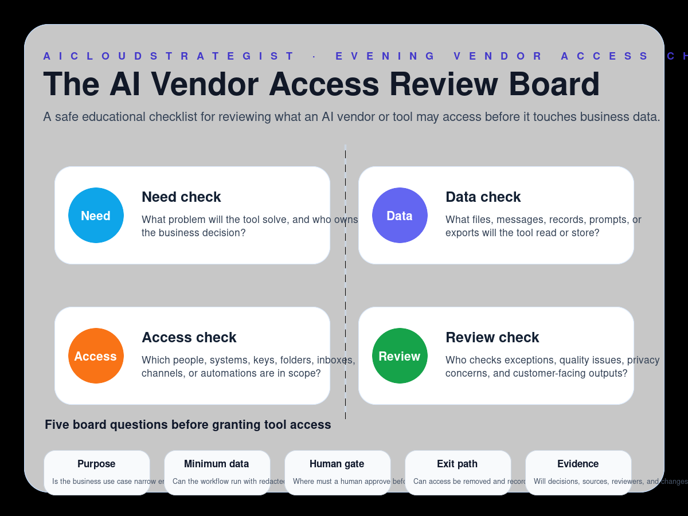

Evening publication · AI vendor access
The AI Vendor Access Review Board
A safe educational checklist for reviewing what an AI vendor or tool may access before it touches business data.

Access review lanes
- Need check: What problem will the tool solve, and who owns the business decision?
- Data check: What files, messages, records, prompts, or exports will the tool read or store?
- Access check: Which people, systems, keys, folders, inboxes, channels, or automations are in scope?
- Review check: Who checks exceptions, quality issues, privacy concerns, and customer-facing outputs?
Five board questions
- Purpose: Is the business use case narrow enough to test safely?
- Minimum data: Can the workflow run with redacted, synthetic, or limited data first?
- Human gate: Where must a human approve before external action?
- Exit path: Can access be removed and records exported if the tool fails?
- Evidence: Will decisions, sources, reviewers, and changes be logged?
How to use this board
Use this board before connecting a new AI tool to shared drives, inboxes, chat systems, CRM exports, customer records, automations, or public-response workflows. Start narrow, log the decision, and keep a named human owner for exceptions.
Truth boundary
Educational workflow only — not legal, compliance, medical, financial, security, certification, savings, ranking, revenue, booking, or guaranteed-performance advice.